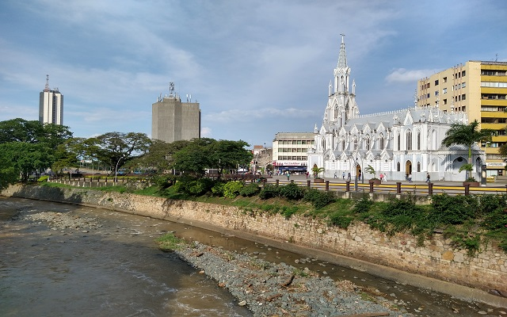
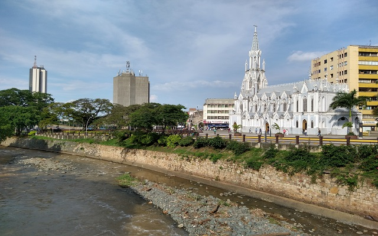

Las estaciones de monitoreo automático de la Corporación Autónoma Regional del Valle del Cauca (CVC) en Cali desempeñan un papel crucial en la gestión de los recursos hídricos y la mitigación de riesgos ambientales. Estos sistemas automatizados registran en tiempo real parámetros esenciales como la precipitación, el caudal y el nivel de los cuerpos de agua. Cada uno de estos parámetros proporciona información valiosa sobre el comportamiento de los ríos y otros sistemas hídricos, permitiendo anticipar fenómenos climáticos extremos, prevenir desbordamientos y asegurar una respuesta oportuna ante posibles emergencias. Este monitoreo constante no solo facilita la preservación del medio ambiente, sino que también protege a las comunidades y optimiza la gestión de los recursos naturales.
65
292
102
57
81
238
238
250
128
116
 

Selecciona un filtro para ver los datos